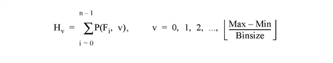

The HISTOGRAM function computes the density function of Array . In the simplest case, the density function, at subscript i , is the number of Array elements in the argument with a value of i .
Let F i = the value of element i , 0 ≤ i < n . Let H v = result of histogram function, an integer vector. The definition of the histogram function becomes:

Note: There may not always be enough virtual memory available to find the density functions of arrays that contain a large number of bins.
For bivariate probability distributions, use the HIST_2D function.
HISTOGRAM can optionally return an array containing a list of the original array subscripts that contributed to each histogram bin. This list, commonly called the reverse (or backwards) index list, efficiently determines which array elements are accumulated in a set of histogram bins. A typical application of the reverse index list is reverse histogram or scatter plot interrogation—a histogram bin or 2D scatter plot location is marked with the cursor and the original data items within that bin are highlighted.
Result = HISTOGRAM( Array [, BINSIZE = value ] [, INPUT = variable ] [, LOCATIONS = variable ] [, MAX = value ] [, MIN = value ] [, / NAN ] [, NBINS = value ] [, OMAX = variable ] [, OMIN = variable ] [, / L64 | REVERSE_INDICES = variable ] )
Returns a 32-bit or a 64-bit integer vector equal to the density function of the input Array .
The vector or array for which the density function is to be computed.
Set this keyword to the size of the bin to use. If this keyword is not specified, and NBINS is not set, then a bin size of 1 is used. If NBINS is set, the default is BINSIZE = (MAX – MIN) / (NBINS – 1).
Note: The data type of the value specified for BINSIZE should match the data type of the Array argument. Since BINSIZE is converted to the data type of Array , specifying mismatched data types may produce undesired results.
Set this keyword to a named variable that contains an array to be added to the output of HISTOGRAM. The density function of Array is added to the existing contents of INPUT and returned as the result. The array is converted to longword type if necessary and must have at least as many elements as are required to form the histogram. Multiple histograms can be efficiently accumulated by specifying partial sums via this keyword.
By default, the return value of HISTOGRAM is 32-bit integer when possible, and 64-bit integer if the number of elements being processed requires it. Set L64 to force 64-bit integers to be returned in all cases. L64 controls the type of Result as well as the output from the REVERSE_INDICES keyword.
Note: Only 64-bit versions of IDL are capable of creating variables requiring a 64-bit result. Check the value of !VERSION.MEMORY_BITS to see if your IDL is 64-bit or not.
Set this keyword to a named variable in which to return the starting locations for each bin. The starting locations are given by MIN + v *BINSIZE, with v = 0,1,...,NBINS-1. LOCATIONS has the same number of elements as the Result, and has the same type as the input Array.
Set this keyword to the maximum value to consider. If this keyword is not specified, Array is searched for its largest value. If this keyword is not specified, and Array is of type byte, 255 is used.
Note: The data type of the value specified for MAX should match the data type of the input array. Since MAX is converted to the data type of the input array, specifying mismatched data types may produce undesired results.
Note: If NBINS is specified, the value for MAX will be adjusted to NBINS*BINSIZE + MIN. This ensures that the last bin has the same width as the other bins.
Set this keyword to the minimum value to consider. If this keyword is not specified, and Array is of type byte, 0 is used. If this keyword is not specified and Array is not of byte type, Array is searched for its smallest value.
Note: The data type of the value specified for MIN should match the data type of the input array. Since MIN is converted to the data type of the input array, specifying mismatched data types may produce undesired results.
Set this keyword to cause the routine to check for occurrences of the IEEE floating-point values NaN or Infinity in the input data. Elements with the value NaN or Infinity are treated as missing data.
Set this keyword to the number of bins to use. If BINSIZE is specified, the number of bins in Result is NBINS, starting at MIN and ending at MIN+(NBINS–1)*BINSIZE. If MAX is specified, the bins will be evenly spaced between MIN and MAX. It is an error to specify NBINS with both BINSIZE and MAX.
Set this keyword to a named variable that will contain the maximum data value used in constructing the histogram.
A named variable that, upon exit, contains the minimum data value used in constructing the histogram.
Set this keyword to a named variable in which the list of reverse indices is returned. When possible, this list is returned as a 32-bit integer vector whose number of elements is the sum of the number of elements in the histogram, N , and the number of array elements included in the histogram, plus one. If the number of elements is too large to be contained in a 32-bit integer, or if the L64 keyword is set, REVERSE_INDICES is returned as a 64-bit integer.
The subscripts of the original array elements falling in the i th bin, 0 ≤ i < N , are given by the expression: R(R[i] : R[i+1]-1), where R is the reverse index list. If R[i] is equal to R[i+1], no elements are present in the i th bin.
For example, make the histogram of array A:
H = HISTOGRAM(A, REVERSE_INDICES = R)
;Set all elements of A that are in the ith bin of H to 0.
IF R[i] NE R[i+1] THEN A[R[R[I] : R[i+1]-1]] = 0
The above is usually more efficient than the following:
bini = WHERE(A EQ i, count)
IF count NE 0 THEN A[bini] = 0
; Create a simple, 2D dataset:
D = DIST(200)
; Plot the histogram of D with a bin size of 1 and the default
; minimum and maximum:
PLOT, HISTOGRAM(D)
; Plot a histogram considering only those values from 10 to 50
; using a bin size of 4:
PLOT, HISTOGRAM(D, MIN = 10, MAX = 50, BINSIZE = 4)
The HISTOGRAM function can also be used to increment the elements of one vector whose subscripts are contained in another vector. To increment those elements of vector A indicated by vector B, use the command:
A = HISTOGRAM(B, INPUT=A, MIN=0, MAX=N_ELEMENTS(A)-1)
This method works for duplicate subscripts, whereas the following statement never adds more than 1 to any element, even if that element is duplicated in vector B:
A[B] = A[B]+1
For example, for the following commands:
A = LONARR(5)
B = [2,2,3]
PRINT, HISTOGRAM(B, INPUT=A, MIN=0, MAX=4)
IDL prints:
0 0 2 1 0
The commands:
A = LONARR(5)
A[B] = A[B]+1
PRINT, A
give the result:
0 0 1 1 0
The following example demonstrates how to use HISTOGRAM:
PRO t_histogram
data = [[-5, 4, 2, -8, 1], $
[ 3, 0, 5, -5, 1], $
[ 6, -7, 4, -4, -8], $
[-1, -5, -14, 2, 1]]
hist = HISTOGRAM(data)
bins = FINDGEN(N_ELEMENTS(hist)) + MIN(data)
PRINT, MIN(hist)
PRINT, bins
PLOT, bins, hist, YRANGE = [MIN(hist)-1, MAX(hist)+1], PSYM = 10, $
XTITLE = 'Bin Number', YTITLE = 'Density per Bin'
END
IDL prints:
0
-14.0000 -13.0000 -12.0000 -11.0000 -10.0000 -9.00000
-8.00000 -7.00000 -6.00000 -5.00000 -4.00000 -3.00000
-2.00000 -1.00000 0.00000 1.00000 2.00000 3.00000
4.00000 5.00000 6.00000
|
Original |
Introduced |
|
5.6 |
Added LOCATIONS keyword |
H_EQ_CT , H_EQ_INT , HIST_2D , HIST_EQUAL